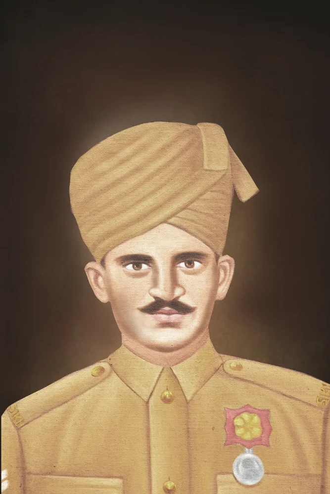
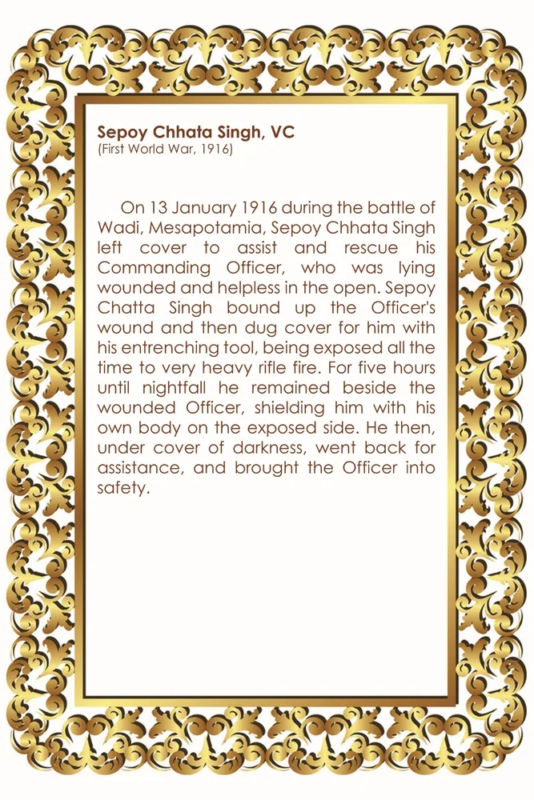

सिपाही छत्ता सिंह, वीसी

शीर्षक: Sepoy Chhata Singh, VC
श्रेणी: हॉल ऑफ फेम
Award: विक्टोरिया क्रॉस
Era / Action: First World War, 1916
श्रेणी: हॉल ऑफ फेम
Award: विक्टोरिया क्रॉस
Era / Action: First World War, 1916
सिपाही छत्ता सिंह, वीसी
उद्धरण (लिखित): 00k,' (प्रथम विश्व युद्ध, 1916) 13 जनवरी 1916 को वाडी, मेसापोटामिया की लड़ाई के दौरान, सिपाही छाता सिंह ने अपने कमांडिंग ऑफिसर की सहायता और बचाव के लिए कवर छोड़ दिया, जो खुले में घायल और असहाय पड़ा हुआ था। सिपाही चट्टा सिंह ने अधिकारी के घाव को बांध दिया और फिर अपने घुसे हुए औजार से उसके लिए कवर खोदा, वह हर समय बहुत भारी राइफल की गोलीबारी के संपर्क में रहता था। रात होने तक पाँच घंटे तक वह घायल अधिकारी के पास रहा, और अपने शरीर को खुले हिस्से में रखकर उसकी रक्षा की। फिर, अंधेरे की आड़ में, वह सहायता के लिए वापस गया, और अधिकारी को सुरक्षित लाया।
उद्धरण (लिखित): 00k,' (प्रथम विश्व युद्ध, 1916) 13 जनवरी 1916 को वाडी, मेसापोटामिया की लड़ाई के दौरान, सिपाही छाता सिंह ने अपने कमांडिंग ऑफिसर की सहायता और बचाव के लिए कवर छोड़ दिया, जो खुले में घायल और असहाय पड़ा हुआ था। सिपाही चट्टा सिंह ने अधिकारी के घाव को बांध दिया और फिर अपने घुसे हुए औजार से उसके लिए कवर खोदा, वह हर समय बहुत भारी राइफल की गोलीबारी के संपर्क में रहता था। रात होने तक पाँच घंटे तक वह घायल अधिकारी के पास रहा, और अपने शरीर को खुले हिस्से में रखकर उसकी रक्षा की। फिर, अंधेरे की आड़ में, वह सहायता के लिए वापस गया, और अधिकारी को सुरक्षित लाया।
ORIGINAL CITATION CARD

* Double-click either image above to view in fullscreen

मोबाइल पर खोलें
अपने फोन पर इस कलाकृति को देखने के लिए स्कैन करें।